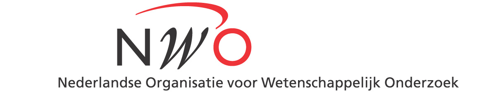
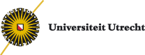

STAR Workshop on Random Graphs 2017.
The workshop will take place on Thursday 26 and Friday 27 January 2017 on the campus
of the University of Utrecht (more details of the location and schedule
will be added later).
This will be the 3rd STAR Workshop on Random Graphs. The first took place in 2012 and the second in 2015.
The workshop is open to all and free of charge, however registration is required to ensure sufficient catering. The deadline for registration is the 16th of January. Registration can be done by emailing benhansen09 at gmail dot com.
Plenary Talks
We are very pleased to announce the following prominent researchers have agreed to deliver plenary talks:
- Marián Boguñá (Barcelona)
- Mihyun Kang (Graz)
- Vincent Tassion (Geneva/Zürich)
- Shariefuddin Pirzada (Kashmir)
- Daniel Valesin (Groningen)
- Nick Wormald (Melbourne)
Short Talks
- Angus Davidson
- Sander Dommers
- Henk Don
- Pim van der Hoorn
- Adam Lipowski
- Rajko Nenadov
- Angelica Pachon
- Merlijn Staps
- Clara Stegehuis
Registered participants
Organizers
Sponsors
|  |  |